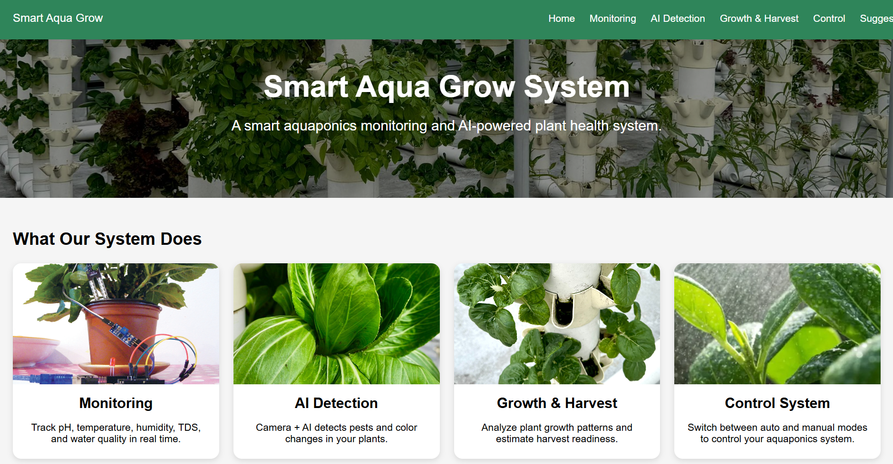

Smart Aqua Grow
Monitoring + AI pipeline that turns sensor data and plant images into dashboard insights and readiness signals.
- Integrated data flow from devices to web dashboard.
- Designed user-facing pages and automation-ready pipeline structure.